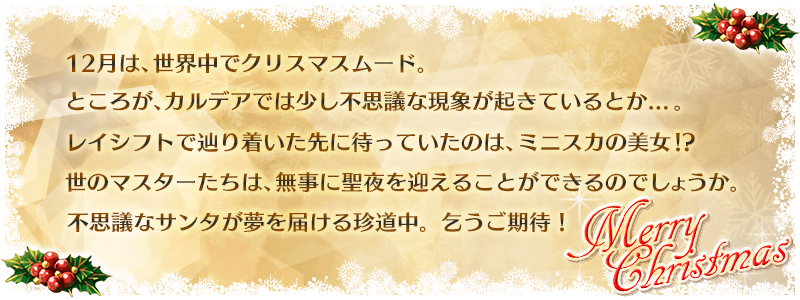
◆活動舉辦期間◆
2016年11月16日(三) 18:00～11月22日(二) 13:59
◆活動概要◆
送上來自奈須きのこ的原創故事，期間限定聖誕節活動。
在迦爾帝亞之門突然出現的關卡「復刻：大致一週 聖誕Alter 輕量版」。
協助期間限定Servant「★4(SR)阿爾托莉亞・潘德拉剛〔聖誕Alter〕，入手能交換珍藏聖誕禮物的特別交換券吧！
與邪惡聖誕老人・聖誕Alter渡過的特別聖誕節！
各位Master，到底能否平安地迎接聖誕夜呢！？
※本活動為於2015年舉辦的「大致一週 聖誕Alter」，經調整一部份活動道具交換的交換數等變得容易遊玩的「輕量版版復刻活動」。
※故事跟2015年舉辦時為相同內容。含有一部份與這次舉辦內容相異的文字。
※活動限定Servant「★4(SR)阿爾托莉亞・潘德拉剛〔聖誕Alter〕」及活動限定概念禮裝，與2015年舉辦時同樣可以獲得。
◆活動参加條件◆
只有通過教學的Master才能參加
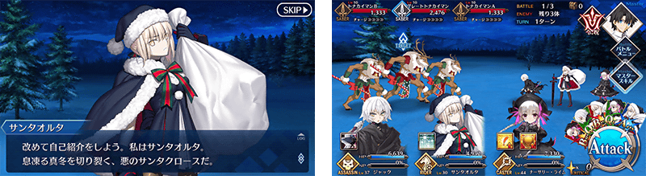
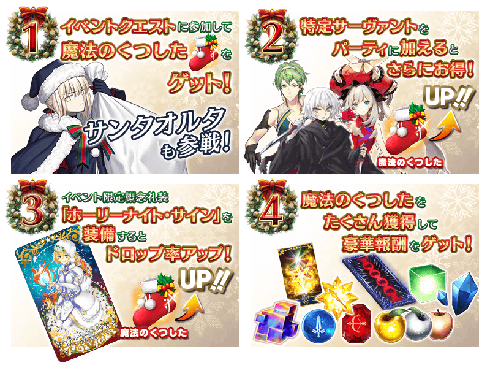
能享受故事的主線關卡會逐日開放。
另外，通過主線關卡第一夜的話，會能反覆刷來獲得活動道具的自由關卡。
| 時間表 | |
|---|---|
| 主線關卡 序幕～第二夜 | 11月16日(三) 19:00～ 11月22日(二) 13:59 |
| 主線關卡 第三夜 | 11月16日(三) 23:00～ 11月22日(二) 13:59 |
| 主線關卡 第四夜 | 11月17日(四) 23:00～ 11月22日(二) 13:59 |
| 主線關卡 第五夜 | 11月18日(五) 23:00～ 11月22日(二) 13:59 |
| 主線關卡 第六夜 | 11月19日(六) 23:00～ 11月22日(二) 13:59 |
| 主線關卡 第七夜 | 11月20日(日) 23:00～ 11月22日(二) 13:59 |
在活動任務收集魔術襪子，從聖誕Alter得到禮物吧！
禮物是每個陣容會放入1個大獎道具。
抽到大獎道具，實行「禮物重置」的話，會補充新的大獎道具。
全部有5次陣容！抽到大獎道具往下個陣容前進吧！
※第6次以後，得入手全部的道具才能重置。但不會補充大獎道具。
※本活動由於是輕量版復刻活動，「禮物重置」的執行次數有所上限。
※「禮物重置」的次數只限7次。請注意第8次以後無法執行。
※在執行5次「禮物重置」時，「黄金の果実」「白銀の果実」會從陣容排除。
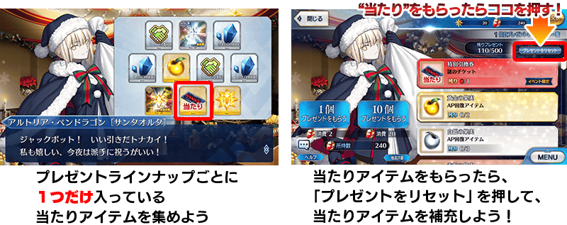
◆禮物陣容◆
|
【大獎道具】 【技能強化＆靈基再臨素材】 【技能強化素材】 【其他道具】 |
◆超值攻略方法・其1◆
將特定的Servant放入隊伍中，「魔法襪子」的獲得數就會增加！
【對象Servant】
阿爾托莉亞・潘德拉剛〔聖誕Alter〕、開膛手傑克、童謠、瑪莉・安東尼(Rider)、瑪爾大(Rider)、大流士三世、大衛、荊軻、羅賓漢、蓋烏斯・尤利烏斯・凱撒、歌劇魅影
※各Servant的增加數不同。
◆超值攻略方法・其2◆
裝備活動限定概念禮裝和期間限定概念禮裝的話，活動專用道具各自的獲得數就會增加。
※請注意在各任務的道具掉落率並非100%。
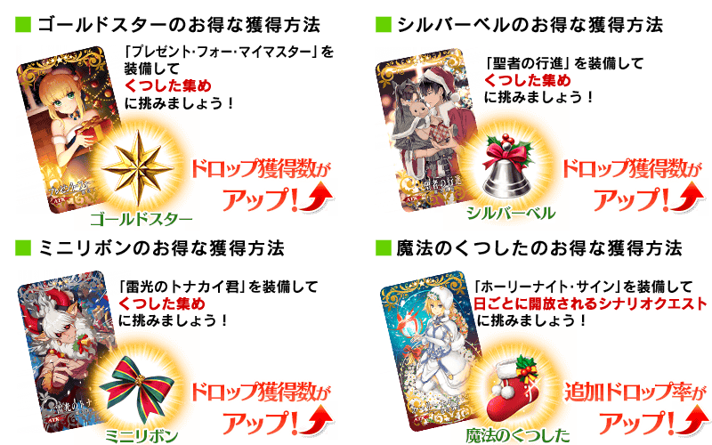
| 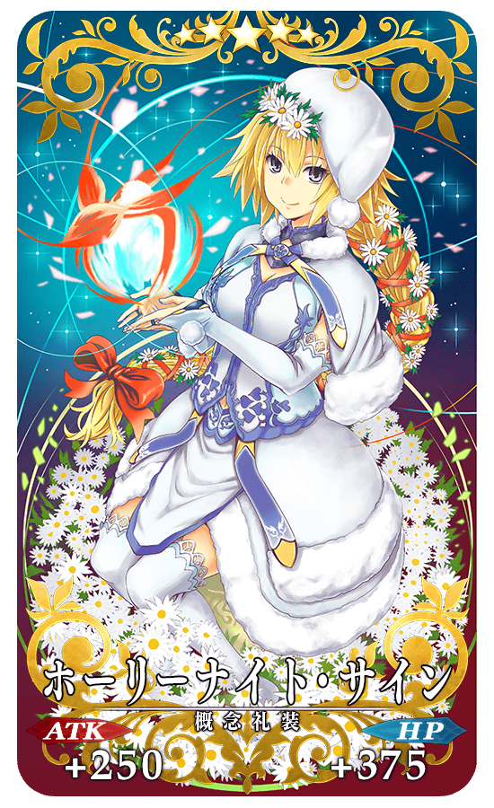 |
★★★★★SSR |
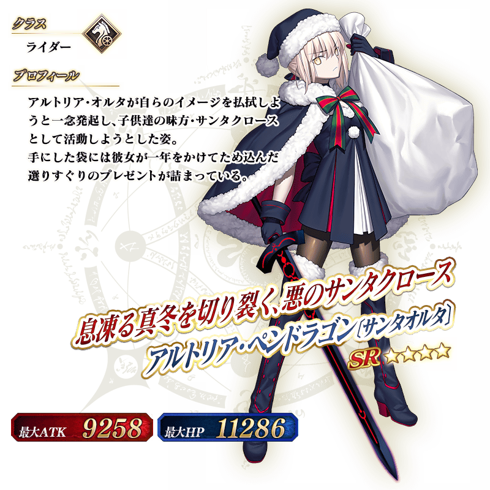
※如果已經在2015年舉辦時獲得，仍然能獲得阿爾托莉亞・潘德拉剛〔聖誕Alter〕。
◆靈基再臨◆
使用除了在活動期間中的道具交換入手的「樽入りチキン」，重複4次靈基再臨的話，卡面會有所變化！
※阿爾托莉亞・潘德拉剛〔聖誕Alter〕不會隨靈基再臨使戰鬥角色的外觀變化。
◆交換方法◆
交換期間：2016年11月16日(三) 18:00～11月30日(三) 13:59
※交換期間結束後，「魔法襪子」「金色星星」「銀色鈴鐺」「迷你緞帶」會消失。
從達文西工房内的「活動道具交換」，用收集來的活動專用道具來交換以下的道具。
◆能用金色星星(ゴールドスター)交換的道具◆
|
【活動限定概念禮裝】 【活動限定靈基再臨素材】 【技能強化＆靈基再臨素材】 【靈基再臨素材】 |
◆能用銀色鈴鐺(シルバーベル)交換的道具◆
|
【活動限定概念禮裝】 【活動限定靈基再臨素材】 【技能強化＆靈基再臨素材】 【靈基再臨素材】 |
◆能用迷你緞帶(ミニリボン)交換的道具◆
|
【活動限定概念禮裝】 【活動限定靈基再臨素材】 【技能強化＆靈基再臨素材】 【其他道具】 |
在編成畫面追加新功能「靈基保管室」！
靈基保管室為與普通所持欄位分開的能保管Servant及概念禮裝的功能。
在靈基保管室最多能保管100位Servant、100張概念禮裝。
※在靈基保管室保管的Servant及概念禮裝無法編入隊伍。
※瑪琇・基利艾拉特及設定成「隊伍成員」「支援用Servant」「喜愛的(お気に入り)」的Servant，無法移動到靈基保管室。
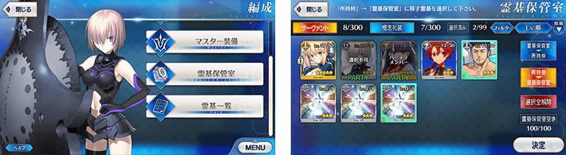
實施預定在700萬DL突破宣傳活動實施的「概念禮裝強化小翻新！」。
對使用有強化過一次以上的概念禮裝做為強化素材時所獲得的EXP量，追加做為素材概念禮裝強化所需的EXP量(累積EXP)。
因此，將強化過的概念禮裝做為強化素材更有效利用。
另外，自這次的更新，Servant及概念禮裝強化時，一次能選擇的強化素材上限從5調升至20。
※強化大成功・極大成功情況時的2倍、3倍EXP不包含累積EXP。
◆翻新實施日◆
2016年11月16日(三) 18:00～
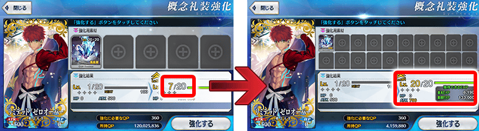
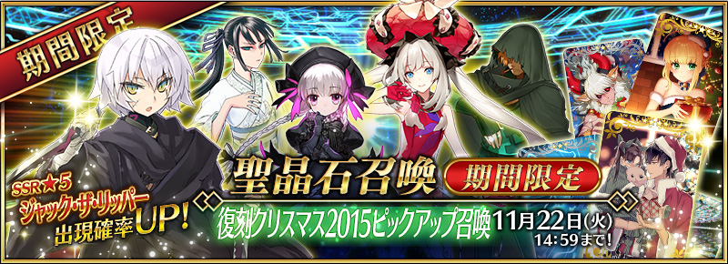
◆「復刻聖誕節2015Pick Up召喚」期間◆
期間：2016年11月16日(三) 18:00～11月22日(二) 13:59
舉辦期間限定「復刻聖誕節2015Pick Up召喚」！
於2015年舉辦的聖誕Pick Up完全復刻！
「★5(SSR)開膛手傑克」以期間限定Pick Up！
另外，「★4(SR)童謠」「★4(SR)瑪莉・安東尼(Rider)」「★3(R)羅賓漢」「★3(R)荊軻」Pick Up！
詳情請在聖晶石召喚畫面左下的召喚詳細確認。
裝備期間限定概念禮裝「★5(SSR)プレゼント・フォー・マイマスター」「★4(SR)聖者の行進」「★3(R)雷光のトナカイ君」的話，活動専用道具的掉落獲得數提升。
※「★3(R)雷光のトナカイ君」在Pick Up期間中，也能在友情點數召喚獲得。
Pick Up期間中，Pick Up Servant、期間限定概念禮裝的出現機率提升！
10次召喚中★4(SR)以上1張確定和★3(R)以上的Servant1位確定！
※★4(SR)以上確定包含Servant和概念禮裝。
※所謂「出現機率UP」意指比同稀有度的Servant出現機率更高的設定。

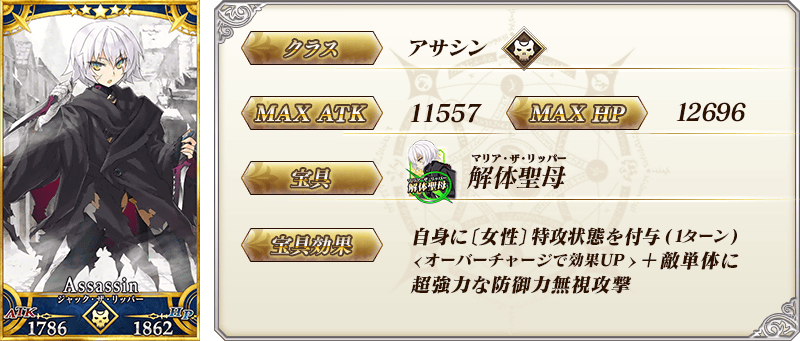
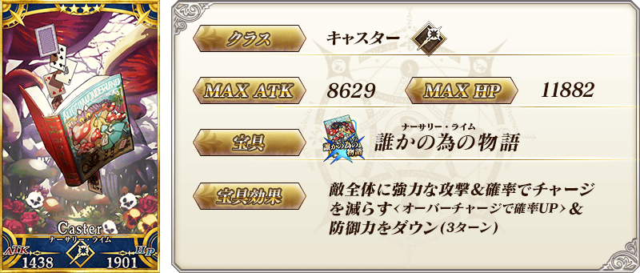
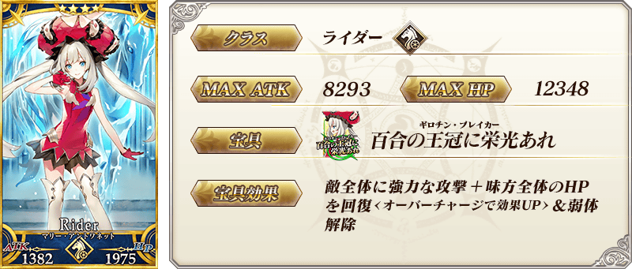

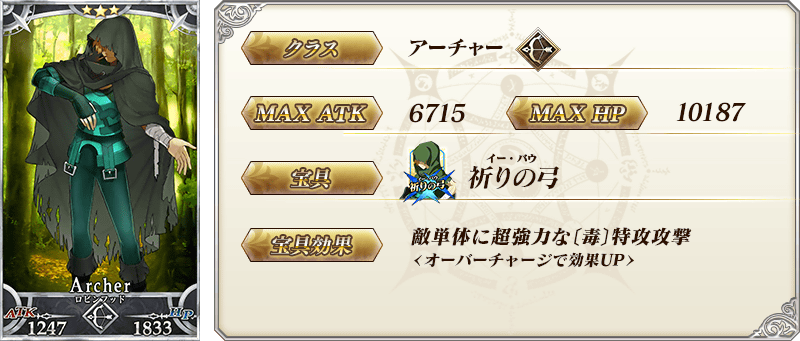

| 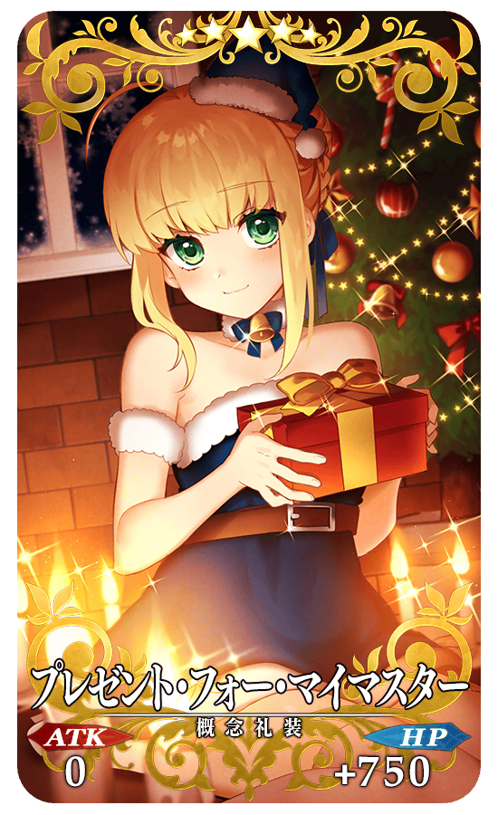 |
★★★★★SSR プレゼント・フォー・マイマスター ATK 0 HP 750 (最大：3000) 技能 自身的星星集中度提升100%＆HP回復量提升40％＋金色星星的掉落獲得數增加1個【『復刻：大致一週 聖誕Alter 輕量版』活動期間限定】 |
| 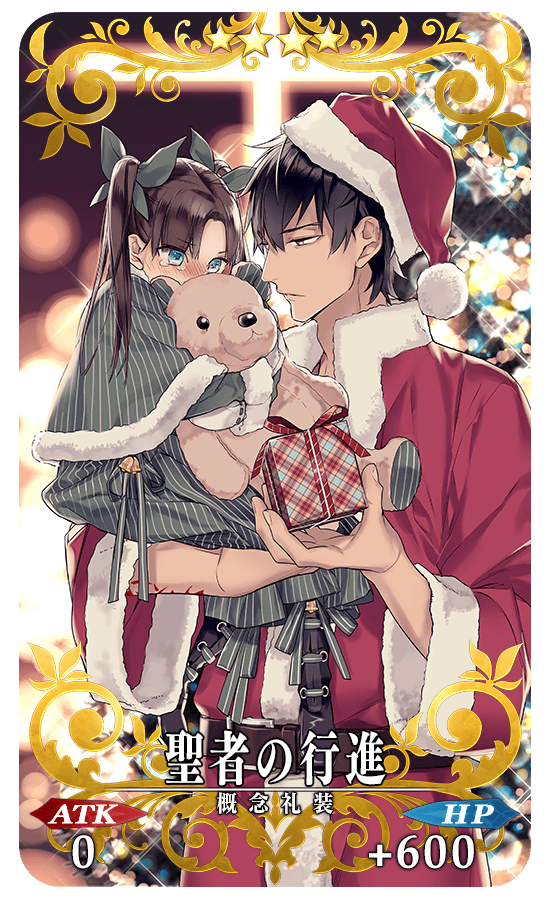 |
★★★★SR 聖者の行進 ATK 0 HP 600 (最大：2250) 技能 對自身賦予每回合HP200回復狀態＆賦予每回合NP3%獲得狀態＋銀色鈴鐺的掉落獲得數增加1個【『復刻：大致一週 聖誕Alter 輕量版』活動期間限定】 |
| 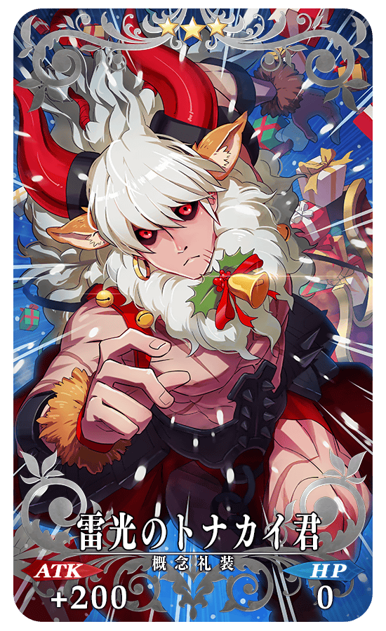 |
★★★R 雷光のトナカイ君 ATK 200 (最大：1000) HP 0 技能 自身的Buster卡的性能提升15％(3回合)＋迷你緞帶的掉落獲得數增加1個【『復刻：大致一週 聖誕Alter 輕量版』活動期間限定】 |

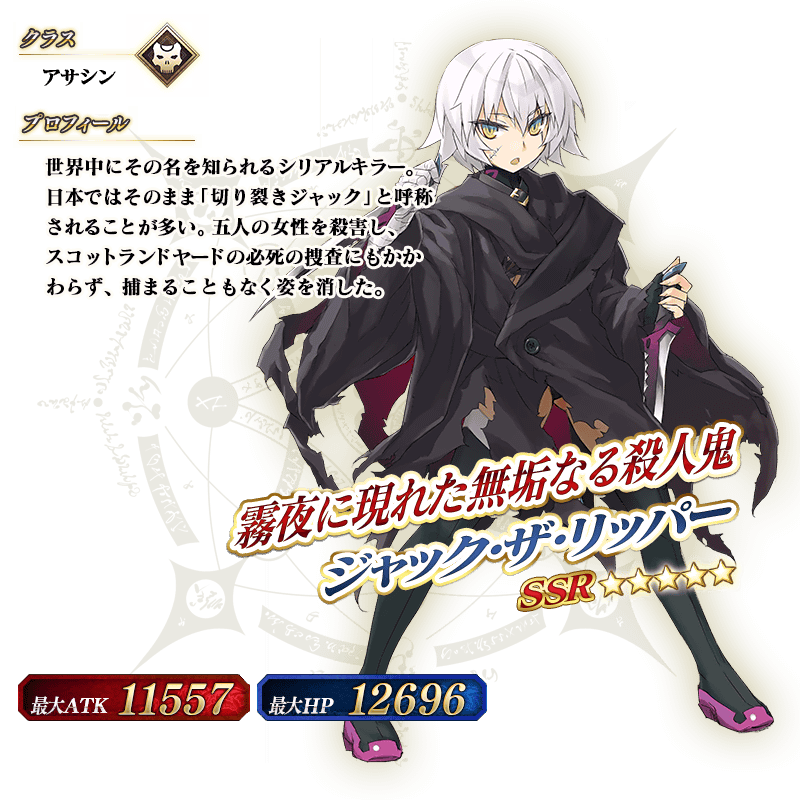